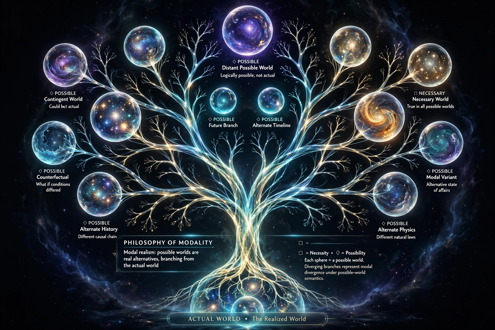

A possible world is a complete and consistent way the world is or could have been. Possible worlds are widely used as a formal device in logic, philosophy, and linguistics in order to provide a semantics for intensional and modal logic. Their metaphysical status has been a subject of controversy in philosophy, with modal realists such as David Lewis arguing that possible worlds are real, concrete worlds, while other philosophers, such as Robert Adams, argue that possible worlds are merely consistent sets of propositions or states of affairs.

The notion of possible worlds goes back at least to Gottfried Wilhelm Leibniz, who argued in his Theodicy that our actual world is the best of all possible worlds, and that God chose to create this world out of all possibilities because it optimised the balance of good versus ill. The modern use of possible worlds in logic grew out of the work of Rudolf Carnap and was developed systematically by Saul Kripke in the 1950s and 1960s as part of a semantics for modal logic.
In modal logic, a proposition is necessarily true if it is true in all possible worlds, and possibly true if it is true in at least one possible world. The actual world is the possible world that is realised; other worlds represent ways things could have gone differently. An accessibility relation between worlds specifies which worlds are possible relative to a given world, and different choices of accessibility relation yield different modal logics.
Possible worlds are used to analyse counterfactual conditionals, propositions, properties, and intentionality. In the philosophy of mind and language, two-dimensional semantics uses possible worlds (or scenarios) to model both the epistemic and metaphysical content of expressions.
David Lewis defended modal realism: the view that possible worlds are real concrete entities, spatiotemporally isolated from one another, and that the actual world is actual only indexically — each world is actual from the perspective of its inhabitants. Most philosophers reject this view as ontologically extravagant, preferring "ersatz" accounts on which possible worlds are abstract representations.